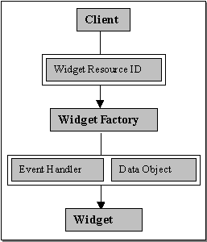
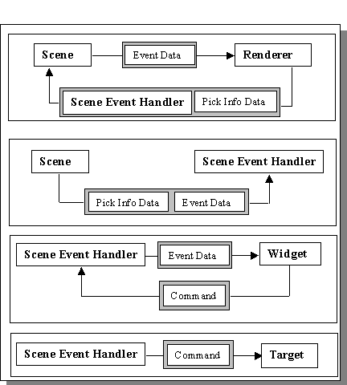

Last updated: [98/06/12 Claire]
Scene widget or Scene GUI is a library of widgets and event handlers used to support UI elements in a DirectDraw Scene canvas. The library includes the most common user interface elements as well as some custom ones such as Pie Menus.
The original requirement was for the main window to support simple UI elements including labels, buttons, menus that would be "honored" by DirectDraw which was being used for the renderer. Current UI libraries and toolkits have no way of signaling there presence to direct draw unless they are a window. Since DirectDraw blits directly to the screen, buttons and menus would be drawn over each time the renderer redraws it's canvas.
In addition, the library would support the special ui requirements of the una and any special in-world display needs.
The rationale for specific display types such as pie menus and sliding button panels can be found in the UI Design Document. The structure of the current library is largely divided into widget classes and corresponding event handlers. The decision to separate the widget from the event handler was motivated by the realization that the widget as a display object might remain constant while the actual response to specific events might change and visa versa.

Constructing a Widget using a Factory
There are two ways to construct most widgets. The first is to specify the needed data elements in the constructor. This allows easy testing and permits widgets to make one another without creating an intermediary data object. In addition, all of the information needed to construct a specific widget is encapsulated in a data object that can be stored in a file or repository and read in at startup. The file used to store these objects is a text file and can be modified by anyone familiar with the data format. When building the repository, the data in the file is converted to serialized data objects. These are stored in the repository under the key given in the original text file. The text file allows internationalization, widget locations to be moved onscreen, shortcuts to be changed etc. without changing the underlying code. At runtime, the widget data object is reconstructed and stored on UI Framework startup in the Unum UI Presenter Factory. To construct the object you need only specify the key of the data object.

Event Propagation for a Scene Widget
Once a widget is constructed, if it is going to respond to events, it must be given an event handler before adding it into the scene. This event handler will be called back by the Scene to handle an event if that widget is picked. In many instances, the event handler is shared by all objects of a particular type. This is true of all control panel and their contained buttons. The location of an event is enough to determine the context. The actual polygon that is picked determines who owns it and that owner handles the event. In this instance, the common event handler acts as a dispatcher to and from the widget and the framework. The handlers for Unum menus and labels rely on the Unum to provide the necessary context, which is done by setting the handlers controlled widget to the appropriate one once a context shifting event occurs. Once a handler, has resolved an event it will send the command represented by that event to the assigned command target. <scene, groups,event handler links here>
Most widgets are lazily constructed form stored data templates. Menus are currently not stored but are constructed from a list returned by the Unum on an update context call. The menu items are referenced by string identifier in the Unum and the menu is constructed by building a menu using the menu item list.
There are no major changes being proposed for this subsystem. The following smaller changes are being suggested:
None that work with our current renderer
Resource management
All construction is lazy. There are two means to construct an item. In one instance, the object is cached. In the other, it is constructed and returned but never stored. Only the former is used outside of the framework package. Once a label or menu is created it is kept in memory until the next region change. This means that the first attempt to make a menu after scene transitions is the slowest. Because of the high level of reuse of menu item elements however the lag after this is negligible. All other widgets can in principle be removed by storage by a call the Unum UI Presenter Factory. In actual fact, this not done because the remainder of the UI elements are main window elements are created for the duration of the session. The location in which an item is stored is not relevant. The objects could in fact be stored in a centralized repository
Threading
Three primary threads will interact with an event handler. The first is the scene event handler thread that handles callbacks to the handler. The second is the SceneWidgetTimer thread a separate thread used to time UI events such as highlights. The third is main UI thread which is used to instantiate the controllers on startup. The major source of deadlocks is between the timer thread and the event handler thread.
Source directory: src/cosm1/ui/gui/scenewidget package: ec.cosm.gui.scenewidget
There are currently no test apps that are up-to-date which allow testing of widgets without bringing up Microcosm. Most widgets can be tested by comparing behavior against the current UI spec.
Fixed timer so it will always perform a task even if the time has elapsed, if the scene hasn't been drawn at least once. This fixed a number of problems with highlights failing to show.
There is currently support throughout the code to permit a linear menu as wells as a piemenu or in addition to a piemenu. Walendo has code that allows for the display and picking of an array of strings. This needs to be wrapped and added as a standard widget
The clear line of separation between widget and handler has not always been maintained this is especially true of the PieMenuHandler. Ideally, the handlers should contain very little state information about a specific handler. In the case of Pie Menus some of the state for example, cursor warping and submenu state, is stored in the handler.
Many time-based functions still do not occur in a "timely" manner from the users point of view. Some highlight and selection events will simply not occur on a slow, heavily loaded machine when the renderer is busy with dynamics engine task. Some effort needs to be made to get a redraw front-plane event to occur separate from the dynamics engine update. Either the renderer needs to be able to draw the front plane separately or a lock and draw mechanism needs to be implemented.